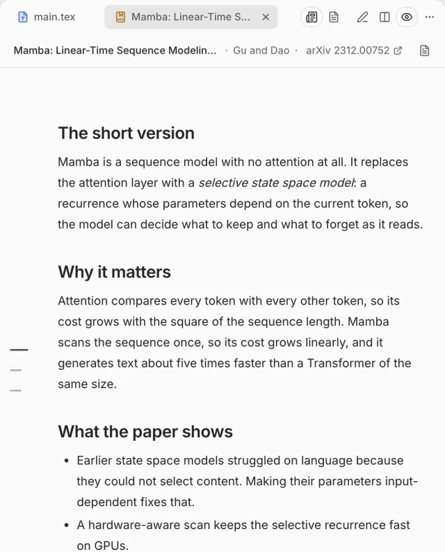
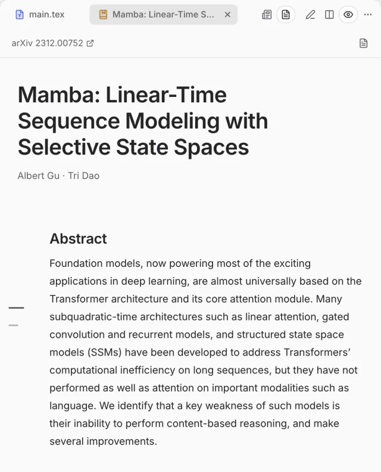
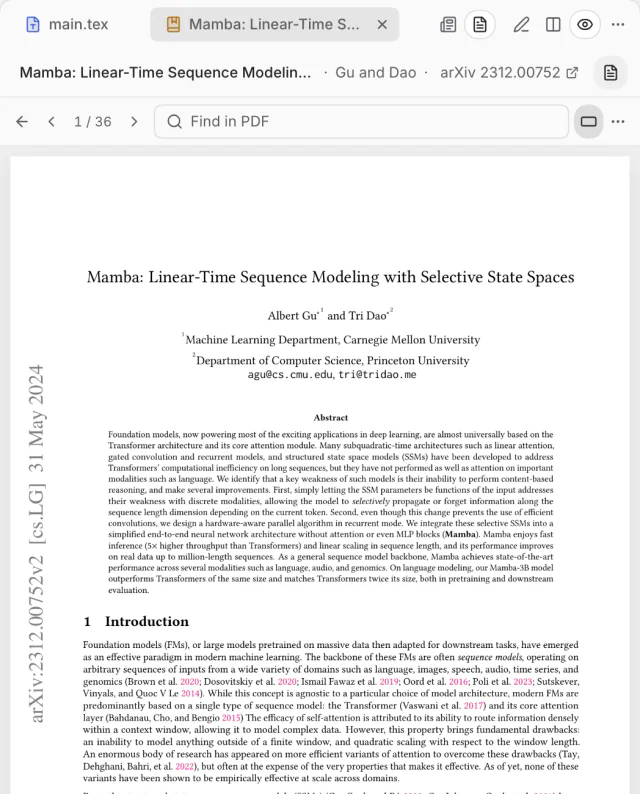
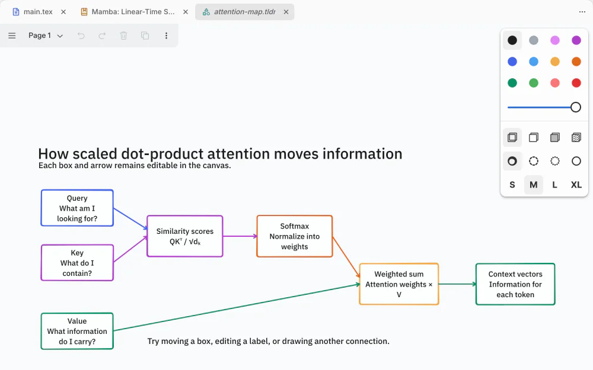
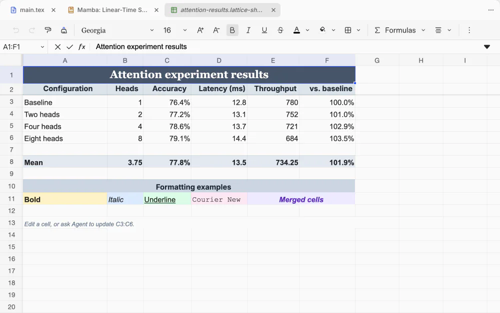

A workspace for
your research
A local-first LaTeX workspace for macOS, with your papers, your co-authors and an AI agent in the same window
On a Mac with an Intel processor? Download for Intel Mac
Try Lattice in your browserThe in-browser demo opens on a larger screen

Lattice at work
Revise
Polish a sentence
Every edit comes with a reason
Bring your own agent
Claude Code, Codex, Cursor, OpenCode or Droid, signed in as you: no model or AI subscription comes with Lattice



Paper shown: Albert Gu and Tri Dao, “Mamba: Linear-Time Sequence Modeling with Selective State Spaces”, arXiv:2312.00752, CC BY 4.0.
Lattice and Overleaf,
in sync both ways
Every format,
in one project


Everything else
a paper needs
Annotations and review
Note on the source or the PDF; the agent proposes each fix
History
Every save, every agent edit and Overleaf’s history, in one timeline
Export for arXiv
One ZIP that builds on its own
Check references
Your bibliography, checked against Crossref
Submission checks
Double-blind leaks caught before you submit
Templates
NeurIPS, ICML, ICLR, ACL, CVPR, AAAI and two thesis classes
Workspaces
Dock any panel anywhere and keep the layout
Terminal and Git
A terminal in the project folder, and a Git panel
Figures
TikZ and PGFPlots figures, typeset and checked before they go in
Questions, answered
Something else? Ask on GitHub
What is Lattice?
A Mac app for writing papers in LaTeX. The source and its live PDF sit side by side, with the papers you cite, your co-authors on Overleaf and an AI agent in the same window. Your project stays an ordinary folder on your Mac, so it opens in any other editor and fits under Git.
Does it include a model, or do I need a separate AI subscription?
Lattice includes no model and has no account or subscription of its own. It drives the coding agent you already use, signed in with your own account: Claude Code or Codex, or another agent CLI it finds on your Mac, such as Cursor, OpenCode or Droid. That agent’s own plan or API key is what you pay for, if anything. Writing, live preview, citations and Overleaf sync need no AI at all.
What do I need to install?
A Mac with macOS 14 or later — Apple Silicon, or Intel with the Intel Mac download — and a TeX distribution: your own MacTeX or TeX Live, or BasicTeX, which Lattice can install for you. For the agent, install and sign in to Claude Code or Codex (or another supported agent CLI). Lattice is not available for Windows or Linux.
Does Lattice upload my files to the cloud?
No. Your project is a folder on your Mac, and Lattice has no server that stores it. Files leave your Mac only through a feature you use: Overleaf sync sends the project to your Overleaf account; the agent sends what it reads to its own provider, under your sign-in; adding a paper looks it up on arXiv, Crossref or OpenAlex. Lattice also checks GitHub for updates. The bundled agent runtime has its telemetry turned off.
My co-authors are on Overleaf. Can I work with them?
Yes. Connect the project to Overleaf with your own Overleaf account, and Lattice syncs both ways as you type: your co-authors keep working on overleaf.com and see your edits arrive, and theirs arrive in Lattice, with presence, comments, chat and tracked changes. Nobody else needs Lattice.
Is Lattice free?
Yes. Lattice is open source under the Apache License 2.0, and the download costs nothing. One part has its own terms: the Trellis panel layout is free for non-commercial use, so using Lattice at a company or other for-profit organisation needs a Trellis licence from its author.
Does it work offline?
Yes. Writing, live preview, builds, history and the papers already in your project work without a connection, because everything lives in the project folder and builds run on your own TeX. Overleaf sync, the agent and adding new papers need the network.
Your next paper,
in one window
For Apple Silicon Macs with macOS 14 or later · Intel Mac